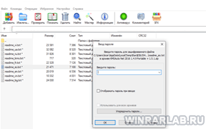
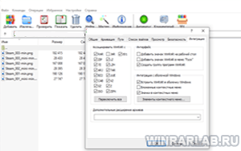

| Категория: | Архиваторы | |
| Поддерживаемые ОС: | Windows 10/8/7/XP | |
| Разрядность: | 32 bit, x32 | |
| Для устройств: | Компьютер | |
| Язык интерфейса: | На Русском | |
| Версия: | Последняя | |
| Разработчик: | Евгений Рошал, Александр Рошал |
Архивирование документов — сжать что либо для передачи или хранения информации нужное дело, для экономии места на диске или флешке а так же при скачивании экономит время и ресурсы сети на загрузку. Помимо этого, с помощью архивирования можно надежно защитить паролём важную информацию. Версия x32 подойдет так же на ПК с 64 разрядной системой ОС но вот в обратной последовательности уже нет.
 |
 |  |
{kind=link}
{kind=link}
Архиватор WinRAR x32 на компьютер
WinRAR – архиватор предназначенный для работы не только c операционной системой Windows. Он будет работать с 32-разрядной ОС, но также подойдет и для 64-разрядной. Ключевое отличие этих систем заключается в рабочем максимальном объёме оперативной памяти. Всё же для 64-разрядной Windows стоит выбрать WinRAR x64 – сжимает быстрее файлы из-за большого размера словаря, который в 4 раза больше, чем у 32-разрядной версии программы, а так же может задействовать больше ядер процессора для сжимания.
Архиватор нацелен на пользователей, которым нужны возможности сжатия файлов, выходящие за рамки того, что Windows предлагает по умолчанию. WinRAR пользуется популярностью в среде системных администраторов и продвинутых пользователей ПК из-за способности разделять архив на несколько томов. Для создания архивов доступны различные параметры конфигурации, включая поддержку безопасности NTFS и уровень сжатия файлов.
Winrar для версий windows:
Скачать WinRAR x32 для Windows бесплатно
| Приложение | OS | Распаковщик | Формат | Версия | Загрузка |
|---|---|---|---|---|---|
| WinRAR (Винрар) | Windows 10 | OpenBox | x32 bit | Бесплатно (на русском) | |
| WinRAR (Винрар) | Windows 8 | OpenBox | x32 bit | Бесплатно (на русском) | |
| WinRAR (Винрар) | Windows 7 | OpenBox | x32 bit | Бесплатно (на русском) | |
| WinRAR (Винрар) | Windows XP | OpenBox | x32 bit | Бесплатно (на русском) | |
| Внимание!! Для вечной активации, скачайте ключ лицензии и перенесите файл rarreg.key в папку установленной программы. | |||||
Как установить WinRAR x32:
Запустите файл.

Ознакомьтесь с информацией и нажмите "Далее".
Нажмите "Далее", или снимите галочки с рекомендуемого ПО и нажмите "Далее". Если снять все галочки, рекомендуемое ПО не установится!
После всех шагов нажмите "Установить".
WinRAR x32 пользуется популярностью из-за простоты использования. Можно в два клика создать самораспаковывающийся архив, или быстро сжать файлы. Некоторые пользователи до сих пор предпочитают этот вариант 64-разрядной версии именно за счёт высокой скорости архивирования. Данный архиватор долге годы сохраняет популярность в среде как продвинутых юзеров, так и тех, кто редко пользуется компьютером.
работает отлично!
Лёгкая установка, удобен в использовании
Самый лучший архиватор из всех.
давно пользуюсь
экономит место на компе
Понятна
Хороший winrar, быстро установился.
Мне как обычному пользователю ПК редко, но бывает нужно воспользоваться данной программой
как мне узнать разрядность